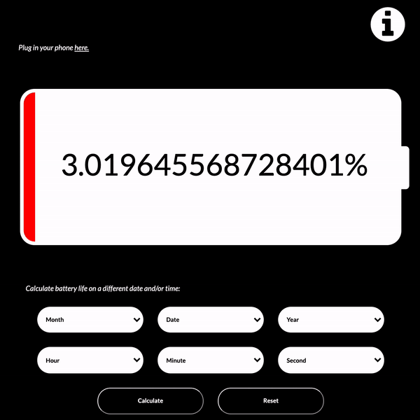
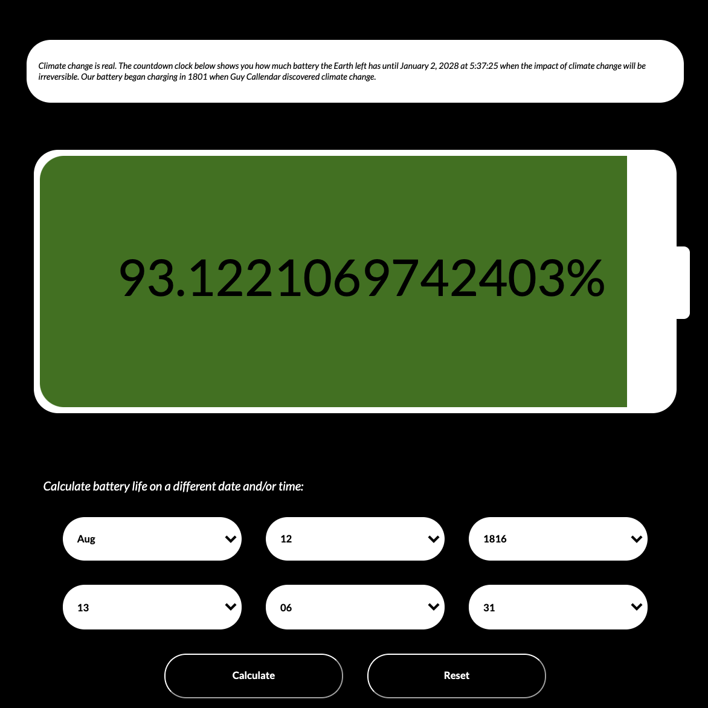
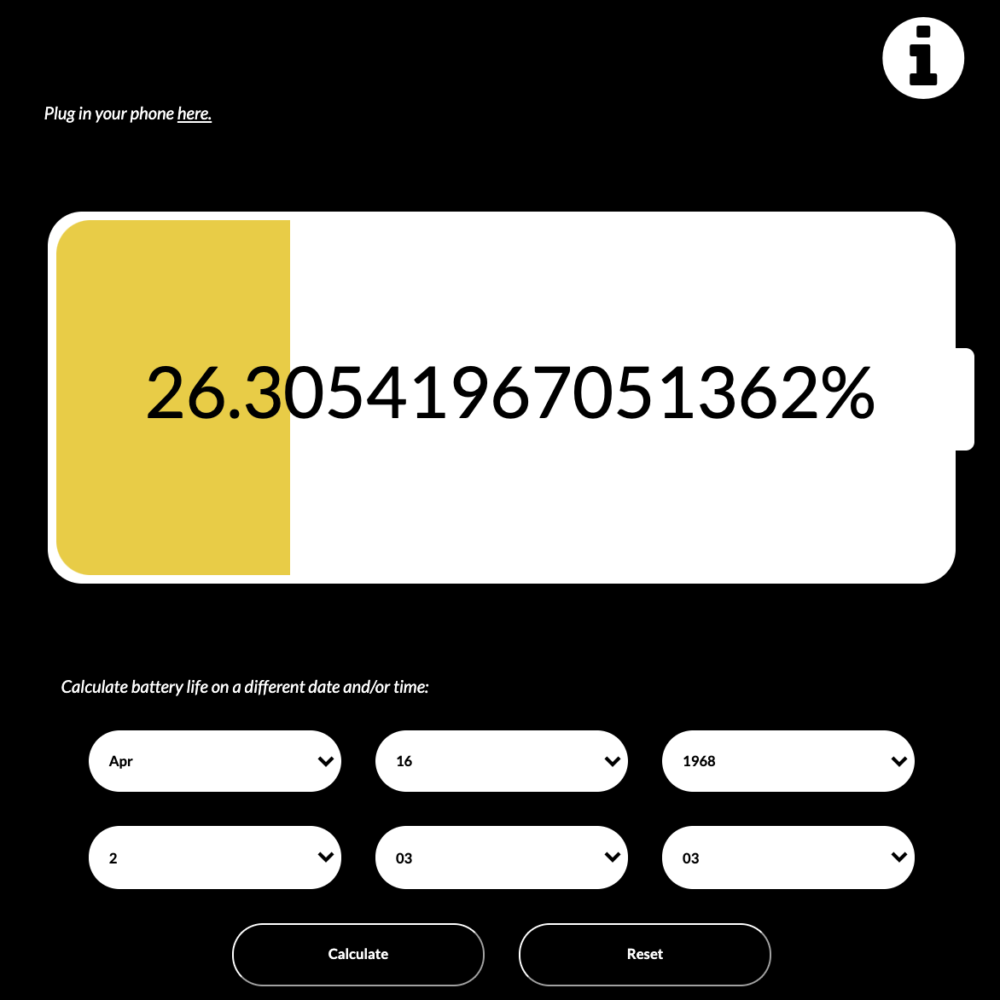
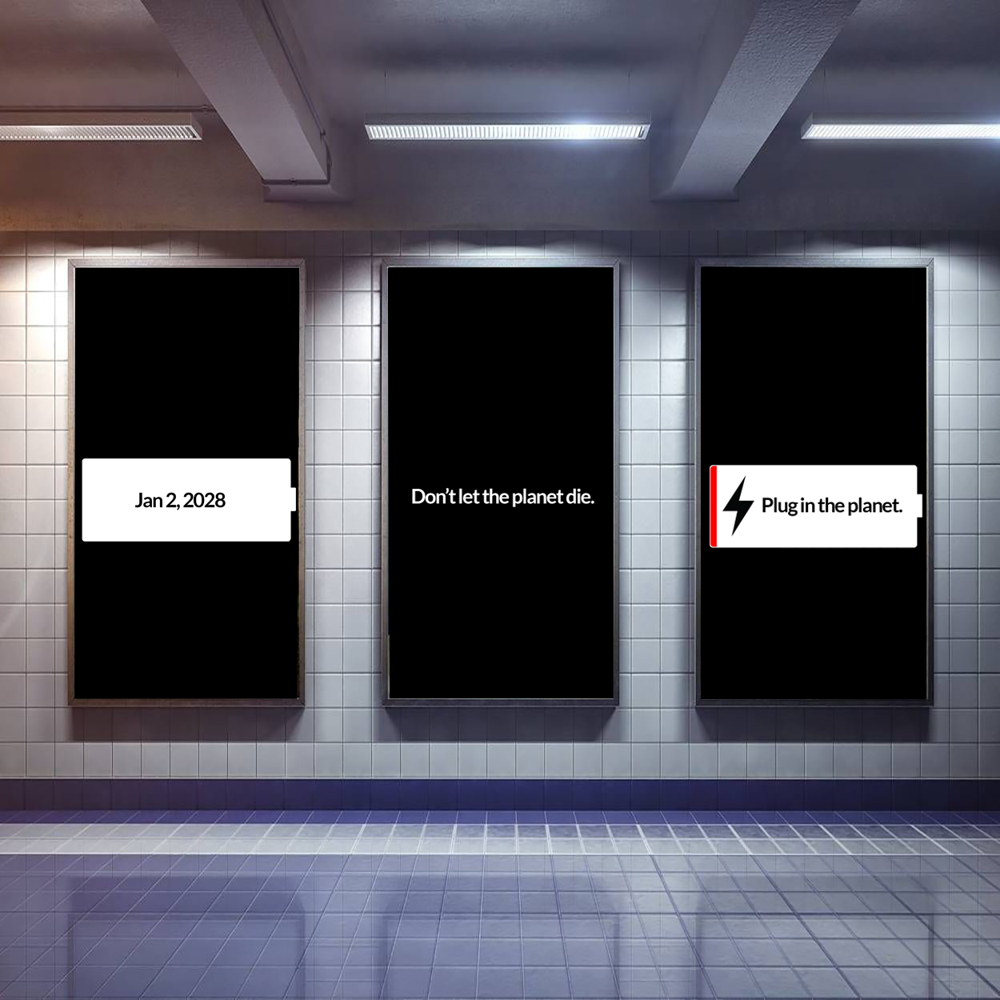
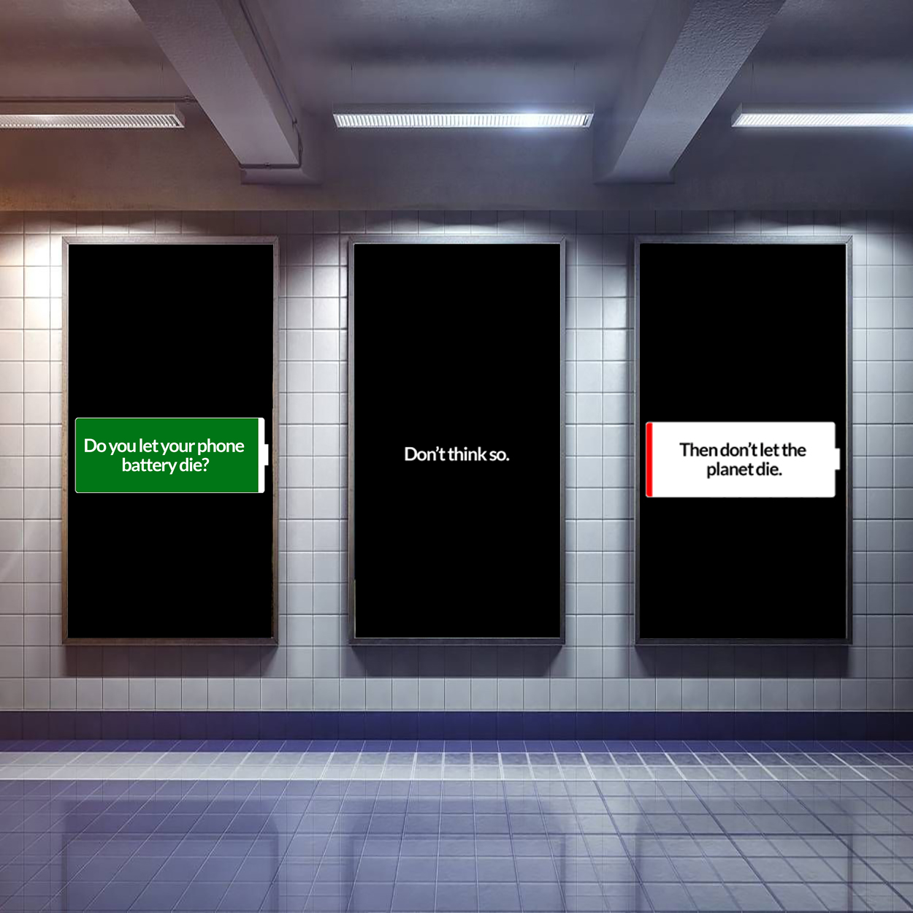

Climate Change Countdown Clock: HTML, CSS, JavaScript
Parsons School of Design, Fall 2020
Climate change is real. I designed a countdown clock that both illustrates the urgency surrounding
climate change and evokes empathy in the user. Using realtime data for the countdown, my clock displays
climate change in the form of a battery percentage. The clock displays how much battery the Earth left has until
January 2, 2028 at 5:37:25 when the impact of climate change will be irreversible. Our battery began charging in 1801 when Guy Callendar discovered climate change.
The clock additionally gives the user the ability to calculate the Earth's battery life on an alternative date and/or time.
Click here to view the climate countdown clock.




